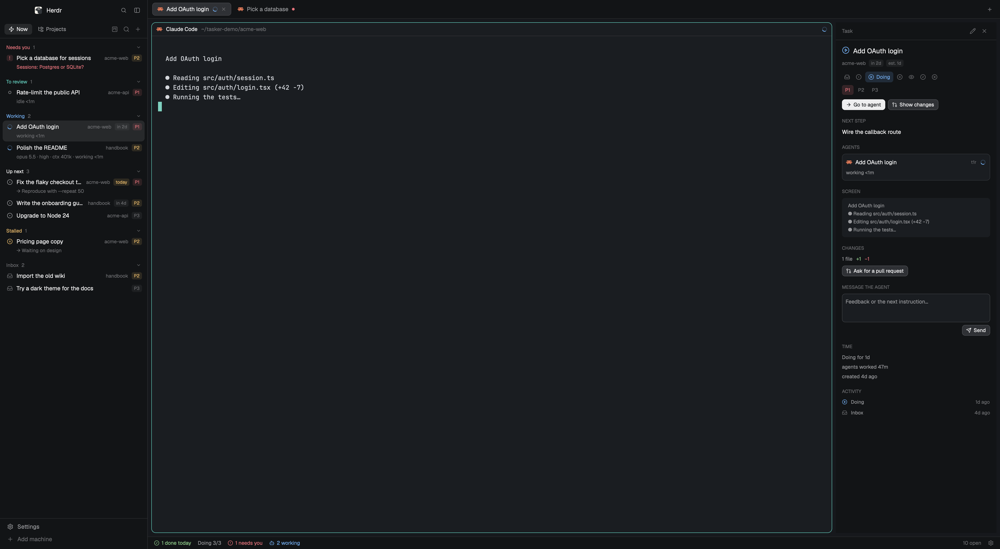
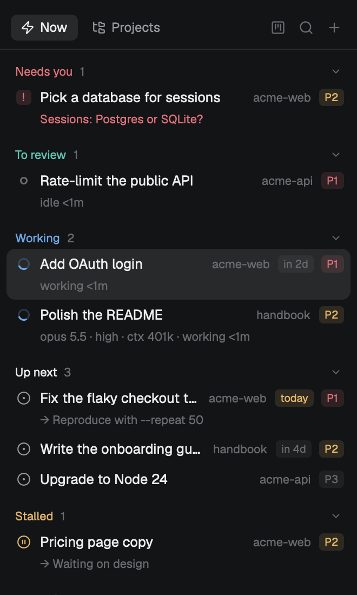

Know which agent needs you next.
tasker is a layout for the Herdr app. It ties the agents you run to the work they're for: projects, repositories and tasks, ordered by what moves things forward.

The list on the left, the agent in the middle, and on the right everything about the selected task: its agent's model and effort, the last lines of its screen, its changes, and a box to send it the next instruction.
Four ways to look at the same work
Everything reads Herdr's live agents and one file of tasks, so the views never disagree. Click a task anywhere and the detail follows.

Now
What moves work forward, in order. An agent's question sits in the row itself, so you can answer without hunting for the tab.

Projects
Projects, their repositories (branch, commits not pushed, uncommitted changes) and their tasks. Terminals that belong to no task show up under their repository with a Make task button.

Board
One column per status. Drag a card to move it, filter by project, and watch the Doing column count against the limit you set.

Task detail
Everything about one task, next to its agent.
- The question the agent is waiting on, and the last lines of its screen.
- Model, reasoning effort, context size and turn for Claude Code and Codex, plus sub-agents.
- Changes in its folder, its pull request and CI checks, with one click to ask for a PR or send the failures back.
- A box to send the agent your next instruction, without leaving the list.
Tasks follow their agents
You plan; the agents' state moves the rest. Nothing is marked done unless you do it.
- InboxIdeas and imported GitHub issues.
- NextYou plan it, with a priority and a due date.
- DoingMoves here by itself when its agent starts working.
- ReviewMoves here by itself when its agent stops.
- DoneOnly you mark it done, after looking.
Ten minutes to your first task
The tutorial goes from install to a reviewed, finished task. The examples are workflows you can copy: a bug fixed in its own worktree, GitHub issues turned into a plan, an agent that files its own follow-ups.